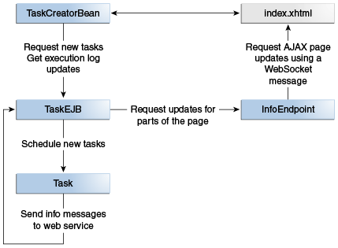

@Resource(name="java:comp/DefaultManagedExecutorService")
ManagedExecutorService mExecService;
@Resource(name="java:comp/DefaultManagedScheduledExecutorService")
ManagedScheduledExecutorService sExecService;
|
Plataforma Java, Edición Empresarial (Java EE) 8 El Tutorial de Java EE |
| Anterior | Siguiente | Contenidos |
El ejemplo de taskcreator demuestra cómo utilizar las utilidades de concurrencia para
Java EE para ejecutar tareas de forma inmediata, periódica o después de un retraso fijo. Este
ejemplo proporciona una interfaz JavaServer Faces que permite a los usuarios enviar tareas para
ejecutar y muestra mensajes de información para cada tarea. El ejemplo utiliza el Servicio de
Ejecutor Administrado para ejecutar tareas inmediatamente y el Servicio de Ejecutor Programado
Administrado para ejecutar tareas periódicamente o después de un retraso fijo. (Consulte
Componentes Principales de las Utilidades de Concurrencia
para obtener información sobre estos servicios).
El ejemplo de taskcreator consta de los siguientes componentes.
Una página de JavaServer Faces (index.xhtml) que contiene tres elementos: un
formulario para enviar tareas, un registro de ejecución de tareas y un formulario para
cancelar tareas periódicas. Esta página envía solicitudes Ajax para crear y cancelar tareas.
Esta página también recibe mensajes de WebSocket, utilizando código JavaScript para actualizar
el registro de ejecución de tareas.
Un bean gestionado por CDI (TaskCreatorBean) que procesa las solicitudes de la
página JavaServer Faces. Este bean invoca los métodos en TaskEJB para enviar
nuevas tareas y cancelar tareas periódicas.
Un enterprise bean (TaskEJB) que obtiene instancias de servicio ejecutor mediante
la inyección de recursos y envía tareas para su ejecución. Este bean también es un punto final
de servicio web JAX-RS. Las tareas envían mensajes de información a este punto final.
Un punto final de WebSocket (InfoEndpoint) que utiliza el enterprise bean para
enviar mensajes de información a los clientes.
Una clase de tarea (Task) que implementa la interfaz Runnable. El
método run de esta clase envía mensajes de información al extremo del servicio
web en TaskEJB y duerme durante 1,5 segundos.
La Figura 59-1 muestra la arquitectura del ejemplo
taskcreator.

La clase TaskEJB obtiene los objetos de servicio del ejecutor predeterminados del
servidor de aplicaciones de la siguiente manera:
@Resource(name="java:comp/DefaultManagedExecutorService")
ManagedExecutorService mExecService;
@Resource(name="java:comp/DefaultManagedScheduledExecutorService")
ManagedScheduledExecutorService sExecService;
El método submitTask en TaskEJB utiliza estos objetos para enviar tareas
para su ejecución de la siguiente manera:
public void submitTask(Task task, String type) {
/* Use the managed executor objects from the app server */
switch (type) {
case "IMMEDIATE":
mExecService.submit(task);
break;
case "DELAYED":
sExecService.schedule(task, 3, TimeUnit.SECONDS);
break;
case "PERIODIC":
ScheduledFuture<?> fut;
fut = sExecService.scheduleAtFixedRate(task, 0, 8,
TimeUnit.SECONDS);
periodicTasks.put(task.getName(), fut);
break;
}
}
Para tareas periódicas, TaskEJB mantiene una referencia al objeto
ScheduledFuture, para que el usuario pueda cancelar la tarea en cualquier momento.
Esta sección describe cómo compilar, empaquetar, implementar y ejecutar el ejemplo de
taskcreator utilizando el EID de NetBeans o Maven.
Aquí se tratan los siguientes temas:
Asegúrese de que el Servidor GlassFish se haya iniciado (consulte Arrancando y Parando el Servidor GlassFish).
En el menú Archivo, elija Abrir proyecto.
En el cuadro de diálogo Abrir proyecto, vaya a:
tut-install/examples/concurrency
Seleccione la carpeta taskcreator.
Haga clic en Abrir proyecto.
En la pestaña Proyectos, haga clic con el botón derecho en el proyecto
taskcreator y seleccione Generar.
Este comando compila e implementa la aplicación.
Asegúrese de que el Servidor GlassFish se haya iniciado (consulte Arrancando y Parando el Servidor GlassFish).
En una ventana de terminal, vaya a:
tut-install/examples/concurrency/taskcreator
Ingrese el siguiente comando para compilar e implementar la aplicación:
mvn install
Abra la siguiente URL en un navegador web:
http://localhost:8080/taskcreator/
La página contiene un formulario para enviar tareas, un registro de ejecución de tareas y un formulario para cancelar tareas periódicas.
Seleccione el tipo de tarea Inmediata, ingrese un nombre de tarea y haga clic en el botón Enviar. Aparecen mensajes como el siguiente en el registro de ejecución de la tarea:
12:40:47 - IMMEDIATE Task TaskA finished
12:40:45 - IMMEDIATE Task TaskA started
Seleccione el tipo de tarea Retrasada (3 segundos), ingrese un nombre de tarea y haga clic en el botón Enviar. Aparecen mensajes como el siguiente en el registro de ejecución de la tarea:
12:43:26 - DELAYED Task TaskB finished
12:43:25 - DELAYED Task TaskB started
12:43:22 - DELAYED Task TaskB submitted
Seleccione el tipo de tarea Periódica (8 segundos), ingrese un nombre de tarea y haga clic en el botón Enviar. Aparecen mensajes como el siguiente en el registro de ejecución de la tarea:
12:45:25 - PERIODIC Task TaskC finished run #2
12:45:23 - PERIODIC Task TaskC started run #2
12:45:17 - PERIODIC Task TaskC finished run #1
12:45:15 - PERIODIC Task TaskC started run #1
Puede agregar más de una tarea periódica. Para cancelar una tarea periódica, selecciónela del formulario y haga clic en Cancelar tarea.
| Anterior | Siguiente | Contenidos |